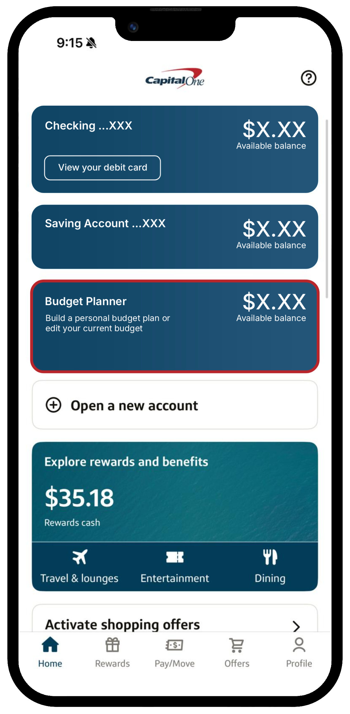
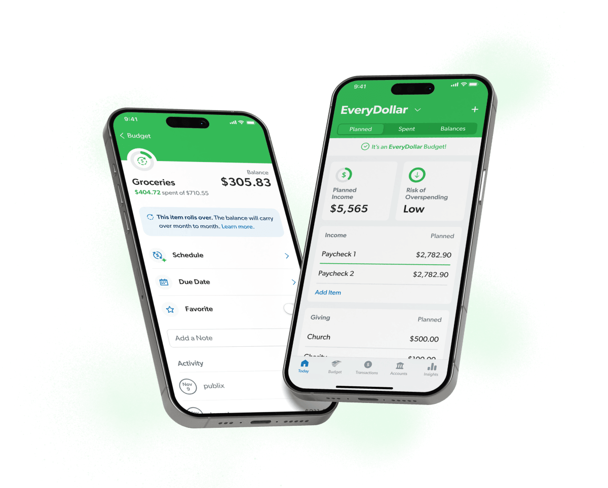
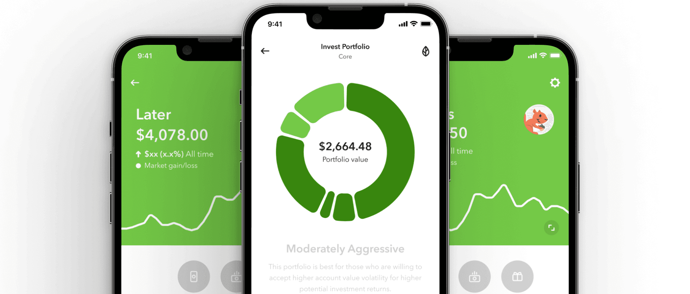
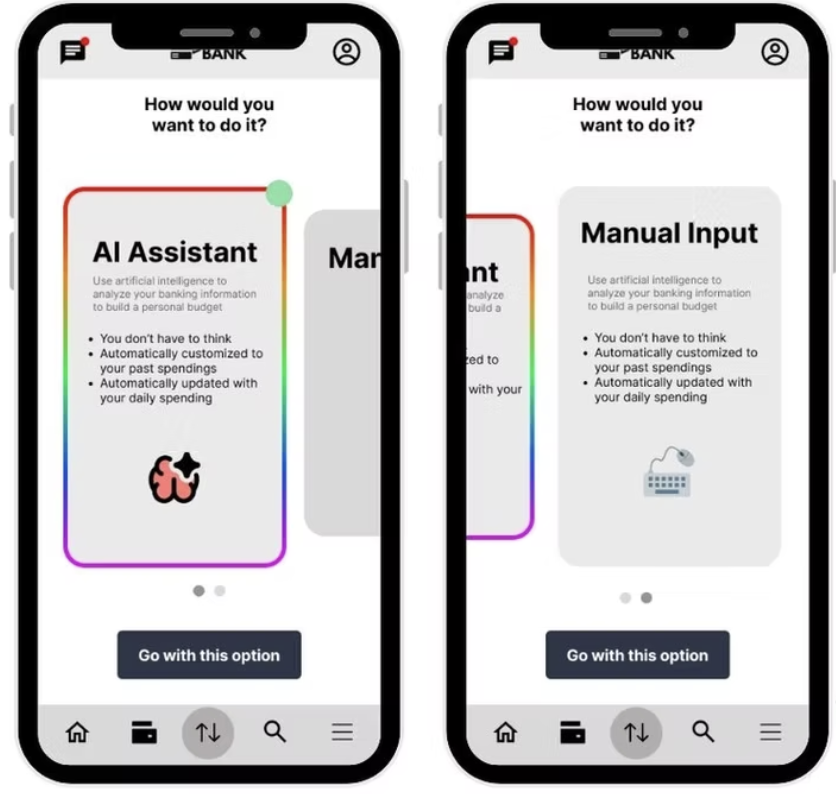

FINANCIAL KNOWLEDGE GAP
Where to begin
Students weren't always confident making informed financial decisions or understanding where to begin.

AI · FINANCIAL LITERACY · 5 MONTHS · 10+ RESEARCH REPORTS
Exploring how AI-powered budgeting could help college students build healthier financial habits through personalized, accessible banking experiences.

Co-led research and discovery, synthesizing student interviews, financial literacy research, and competitive analysis to identify opportunities and shape the product direction. Helped guide the strategic shift from investing toward foundational budgeting.
Collaborated with the team to facilitate discovery and co-design activities, translating participant needs and ideas into product concepts. Helped evaluate competing directions and establish the rationale for an AI-assisted budgeting experience.
Shared project leadership across a nine-person team, helping align research, ideation, and design decisions. Contributed to prototype development, incorporated feedback, and helped prepare final recommendations for KeyLime Interactive.
01 / THE CHALLENGE
College students are often encouraged to budget, save, and invest, yet many lack the financial knowledge, confidence, or motivation to put those habits into practice.
Existing financial tools can introduce more complexity through unfamiliar terminology, overwhelming data, and manual processes that make budgeting feel like another responsibility.
We wanted to explore how a more intuitive, personalized experience could help students understand their finances and take meaningful steps toward healthier financial habits.
THE DESIGN CHALLENGE

FINANCIAL KNOWLEDGE GAP
Students weren't always confident making informed financial decisions or understanding where to begin.
MOTIVATION GAP
Budgeting felt time-consuming and difficult to maintain alongside other responsibilities.
EXPERIENCE GAP
Existing tools lacked approachable, personalized guidance that made financial management easier.
02 / RESEARCH & DISCOVERY
We explored how college students approached budgeting, spending, saving, and investing to better understand their behaviors and motivations.
Through literature reviews, user interviews, competitive analysis, and collaborative workshops, we examined both the practical barriers to budgeting and the emotional relationship students had with their finances.
LITERATURE REVIEW
Reviewed research on Gen Z financial literacy, spending behaviors, and financial habits to understand the broader challenges facing college students.
USER INTERVIEWS
Spoke with 30+ participants to explore existing financial behaviors, knowledge gaps, frustrations, and motivations around budgeting and investing.
EXPERT INTERVIEWS
Consulted four financial experts to better understand financial literacy, student needs, and opportunities for improving financial management.
COMPETITIVE ANALYSIS
Evaluated existing financial tools, including Rocket Money and Acorns, to identify gaps and opportunities for more accessible budgeting experiences.

01
Students struggled with unfamiliar financial terminology and didn't always know where to begin.
02
Tracking expenses, calculating budgets, and managing changing monthly spending made consistency difficult.
03
Participants preferred having budgeting tools integrated into their existing banking apps rather than downloading another standalone application.
04
Students wanted straightforward recommendations and tools that could help manage their finances without requiring extensive financial knowledge.
“I get way too much anxiety trying to sift through my own account and make a budget.”
— Workshop participant
THE OPPORTUNITY

03 / STRATEGIC PIVOT
Our initial direction explored helping students get started with investing. While participants expressed interest in investing, conversations with financial experts challenged whether it was the right starting point.
Without a foundational understanding of budgeting, introducing investment tools risked adding complexity before addressing the more immediate need.
We shifted our focus toward helping students understand their spending habits, establish budgets, and build financial confidence first.
INITIAL DIRECTION
Help students explore investing and make more informed financial decisions.
RESEARCH-DRIVEN DIRECTION
Help students establish foundational budgeting habits through simple, personalized financial guidance.

This shift gave us a clearer problem to solve and a stronger foundation for the product experience.
04 / CONCEPT DEVELOPMENT
With a clearer product direction, we used co-design activities to explore what students would actually find useful in a budgeting tool.
Participants sketched ideas based on their own financial habits, frustrations, and motivations. We used these concepts to develop two potential directions.
A concept that encouraged spending awareness through receipt scanning and cashback incentives.
While participants liked the simplicity and rewards, the experience depended on users consistently remembering to save and scan receipts.

A concept integrated into an existing banking experience that could use financial information to support personalized budgeting and provide actionable guidance.
Participants saw value in reducing manual effort, although trust in AI accessing sensitive financial information remained a concern.

The AI budgeting assistant offered a stronger opportunity to address the barriers identified throughout research.
By building on existing financial information, the experience could reduce the effort required to create a budget while making financial insights more accessible.
Rather than asking students to manually manage every expense, we explored how AI could do more of the work and help users understand what actions to take next.
The concept also aligned with participants' preference for having budgeting support within their existing banking experience.
OUR DIRECTION
05 / DESIGNING THE EXPERIENCE
We translated our selected direction into an AI-assisted budgeting experience designed to make financial management feel more intuitive and less intimidating.
The proposed experience centered around personalized budgeting, visual spending insights, and AI-generated guidance, allowing users to better understand their financial habits without navigating complicated tools.
01
Explore how existing financial information could help users establish a budget without extensive manual setup.
02
Use clear visualizations to help users recognize spending patterns and understand where their money goes.
03
Explore ways for users to receive AI-generated recommendations while maintaining the ability to manage their budget.
04
Make AI interactions understandable and approachable, especially when users are sharing sensitive financial information.
06 / CONCEPT TESTING
We developed low- and mid-fidelity concepts to evaluate how students understood the proposed budgeting experience and which direction best addressed their needs.
Concept testing helped us compare the receipt-scanning and AI-assisted approaches, understand participants' reactions, and identify potential barriers before moving further into design.

For AI to be useful in personal finance, users needed transparency, clarity, and confidence in the recommendations being made.
This reinforced the importance of designing AI experiences that not only reduce effort but also help users understand and maintain control over their decisions.
07 / OUTCOME & TAKEAWAYS
We completed an AI-assisted budgeting prototype and presented our final product direction and recommendations to KeyLime Interactive.
The project translated months of research, collaborative exploration, and concept development into a tangible experience demonstrating how AI could make budgeting more accessible for college students.
REFLECTION
This project reinforced the importance of questioning the problem before committing to a solution.
Our initial direction focused on investing, but research helped us recognize that students needed a stronger financial foundation first. That shift fundamentally changed what we designed and why.
It also reinforced that introducing AI into sensitive experiences requires more than automation. Users need to understand how it works, trust the guidance they receive, and remain in control of their financial decisions.
Good product design isn't always about adding more. Sometimes it's about making the first step easier.